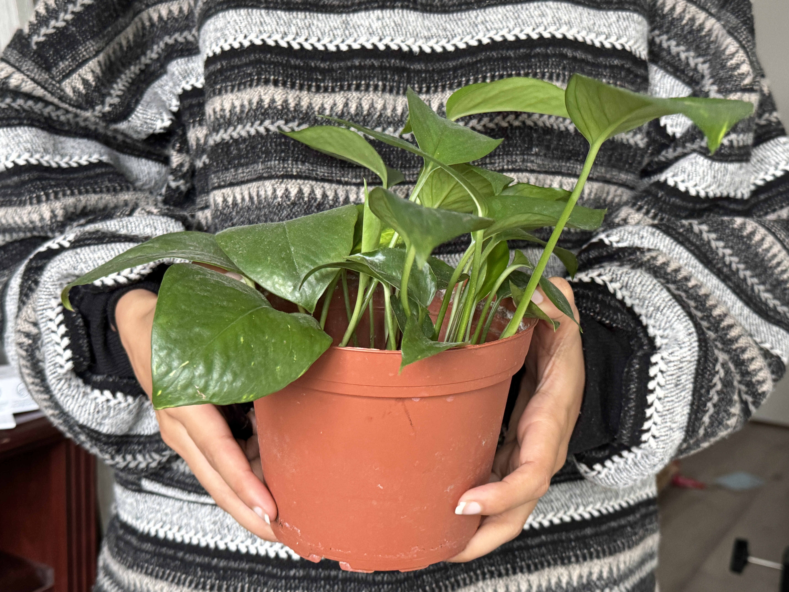

land acknowledgment OM
We are situated on the traditional territories of many nations. The Mississaugas of the Credit, Anishinaabe, Chippewa, the Haudenosaunee, the Huron-Wendat, the Métis, and the Inuit peoples.
Those that have stewarded and continue to steward the land and its waters since time immemorial.
Immemorial. i.e. Beyond reach of memory.
For any one person can remember. Humans have been sharing space, treaties, agreements, acknowledgments to confirm that the land belongs to anyone and everyone who cares for it and treats it and treats the beings that inhabit it with respect.
This space that you're in right now was manifested because one day somebody looked around and saw that we needed more space. For the sake of sharing space. And here we are, vulnerable but longing to share parts of ourselves with unlikely strangers.
I invite you to consider this for the next three weeks. These are your people. This is your space and this is your permission to start something and to share it as the space has been shared with you. veryone

Welcome + Outline AP
Welcome to digital gardening: sowing seeds for a mindful practice
The course will run for two weeks, with 3 classes -> today + 14th + 21st
over the course of the next two weeks we'll be working on
getting our gardens setup and online.
Focus on doing one writing that we will slowly develop over the course of the next two weeks (which we will talk more about later today).
Talk and discuss how to make this practice sustainable and build momentum to keep it going beyond this course.

Learning outcomes: (OM)
History + Importance of this practice (as a whole and personally -> why is important to you?)
Understanding that Digital Gardening is a practice that requires discipline, responsibility and care
Today’s outline OM
MINI LECTURE #1 — Digital Gardening, what is it?
Intention setting + potting activity
a short break
Writing our manifesto
where everyone gets their first pages online
MINI LECTURE #2 — Rituals, habits and accountability
(if time permits) a closing circle to share and discuss upcoming week homework
class, session and workshop OM
we’ll use the words class, session and workshop interchangeably, because this sits somewhere between all three.
We see our roles as facilitators rather than teachers or instructors: creating a structure and the conditions to work individually, together.
what is a digital garden? AP
A digital garden is a blog, a wiki, or a writing or curating practice that lives online and is shared with other people, with work in progress published openly. It isn’t only the act of putting things online. It’s also how you put them there and how you keep developing them.
As the word “garden” suggests, the practice borrows metaphors and practices from gardening. What does it mean to plant the seed of an idea? To take care of it and watch it grow?
Where does the term comes from
Before we get into the weeds of terminology, Can we have a show of hands for who did the reading?
depending on this either lightly go over the stuff or elaborate on it.
The first mentions of using natural metaphors to talk about the web come from around 1998, when Mark Bernstein, Hypertext Gardens described hypertext as a jungle he moved through. A lot has changed in nearly 30 years, and so has the term. It went unused for sometime until these terms started being used on twitter amongst niche circles in slightly different contexts.... Then : Mike Caulfield, The Garden and the Stream (2015).
Anyone who did the reading will already have some of this context.

Garden and the Stream
Influential talk/writing in the digital gardens circle.
Compared conventional social media and feeds to streams. Digital gardens on the other hand aren’t streams.
These practices existed before ofc, but now they were named and articulated.


Have you guys had experiences on the web that have felt like gardens? And if yes — more importantly why do you think it feels like a garden?
Intention setting activity (AP)
A potting activity
- What is our intention for this garden?
feeling over function (AP)
Feelings to pay attention to
the feeling of making the website
feeling of resistance
what do we do when we have feelings of resistance? maybe we write it down, maybe we take a look at our notes, maybe we come back to our intentions....
Propagating Intention

disconnect between natural world and tech (using metaphors) and we wnated to have an enmbodied expoerince
this plant is going to be ur digital garden. How to keep this alive...
What is your intention for this garden?
How to take care of a pothos
- indirect sunlight
- water once a week (come back to yourself)
- Don't over water (terracotta pots absorb water)
?uestions
BREAAAAKKKKK
Writing Exercise
Manifesto
20-25 mins
This first writing that we're going to be doing is just trying to think through what the space is going to be. Why am I doing this? Who am I doing this for? What am I putting in here?
whatever feels right to you
It doesn't have to finish in the next 20 minutes or 25 minutes. It's just a start.
But by the end of these two weeks, this is the one thing that we want you to kind of feel confident about. This is the one thing that becomes after these three weeks, this is going to be your rock.
Like every time you are maybe skeptical about like, why do I even have this thing? This is the thing you come back to and you remind yourself, Oh, this is what I promised myself and this is this is the responsibility I created for myself. And this is why I'm doing it.
This is my manifesto for my digital garden.
Feel free to write in whatever tool you're comfortable with, be it Google Docs, your text edit, notes app, whatever. Or pen and paper.
Once we're done with this activity, we're going to take this writing, put it on a webpage and put it online.
Writing isn’t only writing with words. It’s writing with images, video, drawings and text too.
Setting up a digital garden
~ Preface...
MMM.page
- super easyyyy
- no coding knowledge required

Neocities
- basic html or willingness to learn
Make an account
There's tutorials on neocities you can follow!

Are.na channels + starstar.website
- simple to setup
- familiarity with are.na helps
This would be good if you already have an Are.na account and feel comfortable with it.


files.gallery
- Setup is technical, but once done simple to continue.
- ask one of us to help you through this if needed


getting first pages online
Everyone publishes their first page, using whichever option from the crash course suits them. troubleshooting, helping each other, follow tutorials vibes.
rhythms, rituals & habits
...Everyone sets up goals for themselves, and at some point, for one reason or another, much to our dismay, we abandon those intentions.
But our intention is now alive. It is our responsibility to keep it that way. What we can learn from the living world from "nature" is the embodied knowledge of what it means to care for oneself by caring for another.
The time and effort you put into nurturing this plant, this writing, this web space, is a reminder to come back, check in with yourself. Not because nobody can understand you, but yourself... but Because yourself is how you relate to and understand the world.
habits & rituals
Habits are the body’s learned responses: a stimulus puts us on a certain trajectory and we just do the action, without thinking. Eating, drinking and sleeping are habits. So is scrolling on tik tok and reels when there is idle time.
notice that
Rituals sit somewhere between conscious and non consciousness. They require an understanding, a pedagogy. They aren’t reflexes, but they require more effort to carry out into action.
friction, on purpose Coming back to a digital garden won’t be as easy as reaching for reels for a short hit of dopamine. There will be friction. We still do it because it’s what we set out to do. It was our intention.
ritual = intention + process
A ritual is something we choose for ourselves, so we realign with it every day. We wake up and decide what we want to do that day. A ritual takes faith and conscious effort: you set an intention, and the process you follow for that intention is what makes it ritual.
You have to believe, that this is something that will make you the best version of yourself.
delusion is your friend!
action builds momentum
Fear is the root of all hesitation the bane of all artists, thinkers and creative people. Fear causes stagnation and fear will not let you create a solid practice. What can we do about this? Use our knowledge of our mind, to trick it.
Digital gardening, like any ritual, is action. Every time you set out to do the thing and then actually do it, you gain a little agency. Over time that agency builds confidence, and confidence builds momentum.
intention → action → agency → confidence → momentum
Momentum is what crushes the fear. A digital garden is a tall task: at any moment you have to sit with your thoughts, think them through and write them down. It won’t be easy, but it’s something that evolves in you.
what this space offers
- a community of people practicing the same thing alongside you, and struggling through the same dilemmas
- permission. Sometimes you just need a reason, and this is the reason. You’re here to plant the seeds of a momentum you’ll hopefully feel by the end of the month.
closing circle
from the agendaDiscuss how today’s class went and what you’re doing in the coming week.